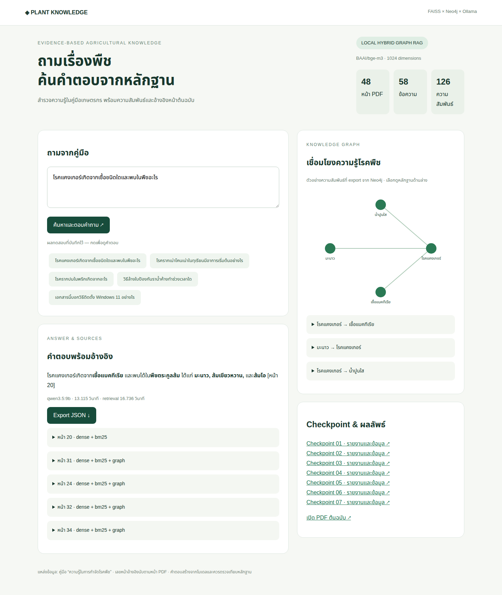

LOCAL HYBRID GRAPH RAG · DELIVERY REPORTระบบถาม–ตอบคู่มือโรคพืชภาษาไทย
FAISS + Thai BM25 + Neo4j + Ollama
ผลการประมวลผลจริง
48 หน้า PDF · 58 chunks · 126 facts
LLM: qwen3.5:9b · Embedding: BAAI/bge-m3 (1024 dimensions)
เวลาสร้าง FAISS: 38.45 วินาที · tests exit code: 0
เปิดเว็บ Chatbot · เปิด Neo4j Browser
ผลเปรียบเทียบการค้นคืน 16 คำถาม
| วิธีค้นคืน | Hit@1 | Hit@5 | MRR@5 |
|---|
| minilm_dense | 18.75% | 50.00% | 30.21% |
| dense | 93.75% | 100.00% | 95.83% |
| bm25 | 87.50% | 100.00% | 92.19% |
| hybrid | 93.75% | 100.00% | 95.83% |
เป็นชุดวินิจฉัยจาก PDF เดียว ไม่ใช่ held-out benchmark; Hit@k คือค้นพบอย่างน้อยหนึ่งหน้าที่ตรง gold และไม่ได้วัดความถูกต้องของคำตอบ
CSV รายคำถาม · JSON ฉบับเต็มคำตอบจากการรันจริง
โรคแคงเกอร์เกิดจากเชื้อชนิดใดและพบในพืชอะไร
โรคแคงเกอร์เกิดจาก**เชื้อแบคทีเรีย** และพบได้ใน**พืชตระกูลส้ม** ได้แก่ **มะนาว, ส้มเขียวหวาน,** และ**ส้มโอ** [หน้า 20]
qwen3.5:9b · 13.115 วินาทีโรครากเน่าโคนเน่าในทุเรียนมีอาการเริ่มต้นอย่างไร
โรครากเน่าโคนเน่าในทุเรียน อาการเริ่มแรกจะปรากฏที่ **ใบและกิ่งอ่อน** โดยมีอาการดังนี้ (อ้างอิง [หน้า 46]):
* ใบอ่อนเหี่ยวเหลือง มีจุดแผลสีน้ำตาลอ่อนฉ่ำน้ำ และเปลี่ยนเป็นสีน้ำตาลดำ เส้นใบมีสีน้ำตาลดำ
* กิ่ง ลำต้น และโคนต้นมีจุดฉ่ำน้ำสีน้ำตาล และมีน้ำเยิ้มออกมาในช่วงเช้า
หากถากเปลือกจะพบว่า **เปลือกเน่า เนื้อไม้เป็นสีน้ำตาล** ส่วนที่เน่าจะมีกลิ่นหืน
qwen3.5:9b · 6.699 วินาทีโรครากปมในพริกเกิดจากอะไร
โรครากปมเกิดจากไส้เดือนฝอยใช้ปากแทงเนื้อเยื่อแล้วดูดน้ำเลี้ยงจากรากเป็นอาหาร [หน้า 36]
qwen3.5:9b · 4.311 วินาทีวิธีล้างใบป้องกันราน้ำค้างทำช่วงเวลาใด
วิธีล้างใบพืชเพื่อป้องกันโรคราน้ำค้าง ให้ปฏิบัติในช่วง **เช้า** (โดยเฉพาะช่วงที่อากาศหนาวเย็นหรือน้ำค้างลงจัด) [หน้า 40]
qwen3.5:9b · 4.36 วินาทีเอกสารนี้บอกวิธีติดตั้ง Windows 11 อย่างไร
ไม่พบข้อมูลในเอกสารที่ตอบคำถามนี้ได้
qwen3.5:9b · 3.249 วินาทีCheckpoint — ภาพแคปและผล export
กราฟและหลักฐาน
Neo4j CSV · Neo4j JSON · GraphML · ภาพ Neo4j Browser · รายการที่คัดออก · บันทึกทบทวนกราฟ
ตรวจคำอ้างและชื่อ entity กับข้อความจริง พร้อมกำหนดชนิดความสัมพันธ์ มีการทบทวนและเพิ่มข้อเท็จจริงบางรายการจากต้นฉบับโดย Codex ซึ่งระบุ origin แยกจาก model; ยังไม่ใช่การรับรองความถูกต้องโดยผู้เชี่ยวชาญ
หน้าเว็บจริง
Desktop PNG · Mobile PNG · PDF

ขอบเขตการทดสอบ
เว็บและฐานข้อมูลรันจริงในเครื่อง LINE มี adapter และ signature test แต่ยังไม่ทดสอบรับ–ส่งข้อความจริง เพราะไม่ได้รับ credentials ไม่มี public tunnel
การเลือกโมเดลคำนึงถึง AMD GPU 8 GB / RAM 30 GB ไม่ได้ทดสอบโมเดลทุกตัวเพื่อยืนยันว่าดีที่สุดทั่วโลก เนื้อหาคำตอบอิงหนังสือปี 2562 ไม่ได้ปรับคำแนะนำเกษตรให้เป็นข้อมูลปัจจุบัน
ผลทดสอบระบบ · คำตอบเต็ม JSON · ผลเปรียบเทียบ LLM ตัวอย่าง